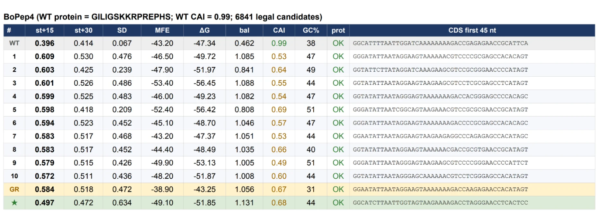
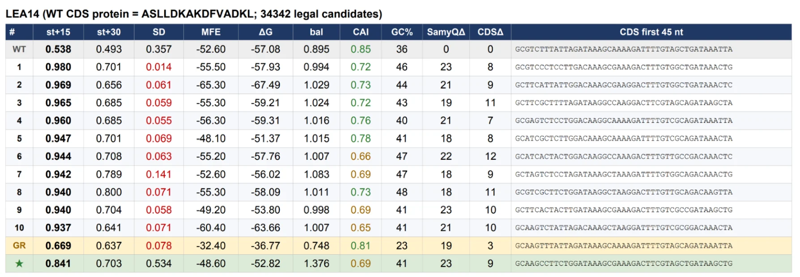
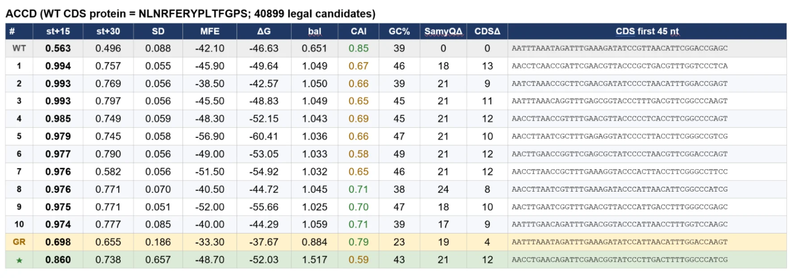
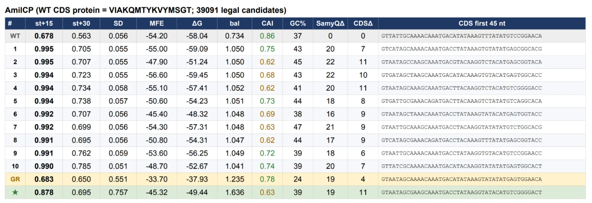

Protectant 01
BoPEP4 · the peptide
Method · Assembly: structural dockingTwelve docking runs against PEPR1 and PEPR2. The only strand with a solved reference structure, so predictions can be graded instead of trusted.
Alanine substitution
18 single-point mutants · HADDOCK 2.5 water refinement at 40/10/10
Methodology
The BoPep4 interface map was built from one validated docking pose: residues buried, salt bridges measured, contacts listed at a 4.5 Å cutoff. It says which side chains sit against PEPR1. It cannot say what the interface loses if one is removed, and by late July that was the question the engineering panel needed answered, because every proposed substitution and every truncation was about to assume a position was expendable.
An alanine scan answers it with a perturbation, not a measurement. Delete one side chain, let the complex relax, record what the energy function says, and repeat at every position. The ranking that comes out is produced by a method sharing no assumptions with a burial calculation, so agreement between them is evidence and disagreement is a question. Eighteen single-point mutants, Ser6 through the C-terminal Asn23, were built on the validated native-mode complex instead of being predicted from scratch: side-chain atoms beyond Cβ deleted, backbone and Cα-Cβ geometry held fixed.
Mutating on a fixed pose is what isolates the cost of the substitution; re-docking each mutant would have let it find an unrelated register and returned a number about that instead. All 19 systems, 18 mutants plus an unmutated baseline reused from trunc1-23_PEPR1, went through identical HADDOCK 2.5 water refinement at 40/10/10 with the same restraints, so score differences are attributable to the mutation. Electrostatic and van der Waals terms were kept separate, to tell a lost salt bridge from lost packing, and peptide backbone deviation was recorded as a pose metric independent of the score.
All 18 completed.
ResultsKey results6 findings
- Eight hotspots that fail the same way. K7, R9, R11, E12, H14, K18, H22 and N23 clear +7 on both metrics, and every one is carried by a large positive ΔEelec, from +32.6 at H14 to +150.4 at K18, with ΔEvdw flat or favourable throughout. That is the signature of removing a charged side chain from a salt bridge, and it rules out a packing artefact introduced by the mutagenesis. K18A and K7A are the largest hits. K7A is also the only mutant that moves the peptide, by 1.62 Å, so it costs binding energy and pose retention together.
- Cross-validation at 13 of 13. Of the positions where the interface map made an unambiguous call, eight anchors and five non-contacts, the scan agrees with all of them. Two methods with no shared assumptions returned the same interface.
- Asn23 ranks last of the eight hotspots. N23A is +9.5, which sits oddly against Asn23 having the largest buried surface at 170 Ų and four hydrogen bonds. The explanation the data support is that several of those contacts engage the C-terminal carboxylate and backbone amide, not the side-chain atoms an Asn to Ala substitution removes, so part of the clamp survives. That distinction is what the C-terminal tag question turned on later: substituting at position 23 keeps the chain terminus, appending to it does not.
- Ser15 and Ser16 disagree with their own conservation. Both are invariant across all 16 characterised Pep-family sequences and were assigned as core hydrogen-bonded contacts. Neither registers, at −1.3 and −8.0. A serine hydroxyl contributes little to an electrostatic term next to a full salt bridge, so the conservation is real and this assay is not positioned to explain it.
- The scan would not have found either control. S15A and G17A were ordered as loss-of-function controls, on published activities roughly 100-fold and more than 4000-fold below wild type. The scan returns −1.3 and −2.9 at exactly those positions. A method that misses the two substitutions the published work shows matter most is a method whose silence elsewhere carries no weight, which is the same conclusion the July audit of HADDOCK and AlphaFold3 reached by a different route.
- The glycines move and the prolines do not. G20A and G21A show the largest backbone deviations in the set, 1.21 and 1.42 Å, with no score effect, consistent with glycine accommodating dihedrals an alanine cannot. The hypothesis floated before the run, that the prolines would show the same signature from losing backbone rigidity, failed: P10A, P13A and P19A sit at 0.75 to 1.03 Å, inside the neutral range.
ResultsProject6 findings
- The binding site is not where the remaining engineering happens. This scan established that the binding site is not where that work happens, by naming the positions that are closed.
- The binding site is closed and the construct is open. Eight positions are protected as binding-critical, and five more, S15, S16, G17, G20 and G21, are protected on conservation grounds even without a score penalty. With the C terminus already off-limits, the surface left to engineer is the construct and the delivery. Every subsequent design decision in the project sits there.
- Direct evidence now sits under the secretion handle. S6, K8, P10, P13 and P19 are neutral on both metrics. K8 is the residue the K8Q and K8E secretion designs modify, and until this sprint that choice rested on the burial map alone. The project's limiting problem is secretion efficiency, so a free handle at K8 is a project-level result and not a structural footnote.
- The truncation direction was set here. Flat response at S6, plus the map's finding that residues 1 to 6 make no contact, pointed at the N terminus as the removable end. Given the biomanufacturing strategy, the gain was taken as truncation instead of substitution, which produced the ladder and then the 9-23 construct: a third less mass, one trypsin-type site instead of three, half the positive charge, so less of it binding electrostatically to the producer cells.
- K18R had a rationale, and losing it cost nothing. K18 carries the largest electrostatic contribution in the peptide, which made a conservative Lys to Arg swap attractive. MD later found the Lys18 contact with Asp348 present in 53.7% of frames over a 2.55 to 9.37 Å swing, and Phe371 nearest Gly20 and not Lys18. Position 18 still matters; the structural claim underneath K18R does not, and it was not ordered. Because the engineering target had already moved to the construct, withdrawing it removed nothing from the panel.
- PEPR2 is not covered. Existing data show PEPR2 with a degraded mid-belt where Arg11 and Glu12 lose their partners, so R11A and E12A may behave differently there. A PEPR2 scan has not been run, and dual-receptor engagement is a ReLEAF-level claim, so it stays open.
Truncation ladder
Δ1-2, Δ1-3, 7-23, 9-23, 15-23 · HADDOCK and AF3
Methodology
The alanine scan had just established which positions the interface cannot lose, and by implication which it can: S6, K8, P10, P13 and P19 neutral on both metrics, with the map putting residues 1 to 6 outside the contact region entirely. That licenses editing the N terminus. It does not tell you where to cut. The distinction matters because a substitution and a truncation are not the same experiment. A point mutation removes one side chain and leaves the chain.
A truncation removes residues, shortens the peptide, changes its net charge, and moves the N terminus to a new residue that now carries a free α-amino group. Which consequence dominates could not be predicted, so the series was run as a ladder: cut at successive points, score each one on the same protocol, and find where the interface stops tolerating it. Two things made this the sprint the project needed, not a curiosity.
The published work already reports the 9-23 core retaining activity within a factor of ten, so a short form was known to be viable and the question was only which short form. And the manufacturing case was strong enough that if the binding cost were tolerable, the decision was already made. The ladder existed to find out whether it was tolerable, and where.
- model
- BoPEP4 7-23 · PEPR1
- receptor
- PEPR1, 710 residues
- peptide
- 17 residues (7-23)
- termini
- charged
- refinement job
- 779655
- status
- submitted; output not retrieved
- model
- BoPEP4 9-23 · PEPR1
- receptor
- PEPR1, 710 residues
- peptide
- 15 residues (9-23)
- termini
- charged
- refinement job
- 779660
- status
- submitted; output not retrieved
- model
- BoPEP4 15-23 · PEPR1
- receptor
- PEPR1, 710 residues
- peptide
- 9 residues (15-23)
- termini
- charged
- refinement job
- 779661
- status
- submitted; output not retrieved
ResultsKey results4 findings
- The anchor belt lies downstream of the cut. The atlas established the architecture the ladder is cutting into: an extended peptide clipped into an acidic LRR groove by a three-point salt-bridge belt at Arg9, Lys7/Lys8 and position 18, with the buried Asn23 anchor at the end. The first belt residue is Lys7. Shaving the N terminus removes only Gly1 to Leu3, which make no anchor contact, and the belt is retained intact in every truncated complex.
- Removing the anchorless N terminus costs nothing measurable. The shallow cuts keep position 18 on its canonical partner and come out ahead of both substitutions on AF3 confidence, which is the structural licence for treating N-terminal length as an engineering axis. Those numbers sit in the Δ1-2, Δ1-3 record instead of being repeated here.
- The series then moved past them. Δ1-2 and Δ1-3 were the July finalists and were not ordered; the cut moved further down the ladder to 9-23, with 7-23 alongside it, on manufacturing grounds and not on a binding result.
- MD located the boundary, and then moved it. The wild-type run put the fluctuation break at the same residue the ladder's cliff falls on: Gly1 fluctuating by 3.51 Å, everything from Glu12 onward under 1.0 Å, and Arg9 at the boundary with an RMSF of 1.32 Å, a mean closest approach of 2.79 Å and 100% contact occupancy. Two methods with no shared assumptions landed on Arg9. The truncation runs then complicated it: clamp integrity is 100.0% for 1-23, 98.5% for 7-23 and 99.9% for 15-23, but 77.1% for 9-23. The cliff is real and it is not where length predicts, because 9-23 keeps the 9-14 segment while removing the Lys7-Asp129 salt bridge that anchors it, and 15-23 removes both together. Shorter is not worse; losing an anchor without the segment it anchors is worse. Project
ResultsProject3 findings
- The production molecule came out of this series. 9-23 is the manufacturing candidate and the construct already in hand as D-01 and D-04. Against full length it carries 33% less mass, 1,612.73 Da against 2,409.74 Da, one trypsin-type cut site instead of three, and half the positive charge at +2.1 against +4.1, so less of it sticks electrostatically to the producer cells. It also removes the greasy GILI front segment, which is the part that raises a self-toxicity risk in B. subtilis, where no amount of promoter tuning would recover the yield. The cost is the published factor of ten in activity. It costs nothing to settle at the bench. Both lengths were ordered, 9-23 as D-01 and D-04 and full length as D-03 and D-05, so the head-to-head titre can already be run in one sitting. That is the clearest example in the project of a dry lab result shaped so the wet lab can decide it.
- Engineering moved away from the binding site. With the C terminus off-limits and the eight hotspots protected, N-terminal length was the only axis left that changes the molecule's manufacturability without touching the interface. The truncation series is what established that axis, and the later tag-placement result depends on it: the N terminus is the end that flaps and the end the ladder shows is removable, so it is where a tag can sit without touching a contact.
- Nothing computational separated the rungs, so the whole ladder was sent. 7-23 is more stable than 9-23 on every MD metric recorded, with clamp integrity 98.5% against 77.1%, Asn23-Arg487 99.9% against 81.1%, and 151 receptor contacts against 129, while 9-23 is the cheaper molecule to make. 15-23, 9-23, 7-23 and full length all went to the bench as one series, so the titre settles a question the dry lab could not.
Tandem repeat analysis
17-sequence Pep-family alignment · chain-end chemistry
Methodology
The alanine scan and the truncation ladder both ask what the receptor needs. The alignment asks what the peptide family keeps, which is a different and cheaper question: every position that is invariant across a family has been held there by selection, and selection sees the whole job, not only docking. That was needed because the methods in hand had failed on exactly this axis. The 30 July audit found the HADDOCK score 93% explainable by length and charge and uncorrelated with measured activity, and AF3 unable to separate BoPep4 from a peptide more than 4000-fold dead.
Conservation is the one line of evidence in the sprint that is independent of both, since it is observation and not prediction. Tandem repeats were the same week's second question. If a single copy engages one receptor, two copies on one chain might engage two, and for a production platform a potency gain per molecule secreted is worth more than a binding gain.
ResultsKey results5 findings
- The conserved region stops at 20, not 23. 15 to 23 had been described as the conserved block. The alignment supports an invariant SSG at 15 to 17 and an invariant Gly at 20, with 21, 22 and 23 variable. BoPEP4's own Gly21 is a minority residue at that position.
- Asn23 is not invariant in this set. All seven characterised AtPEPs carry Asn there, and so does BoPEP4, but five of the nine Brassica entries do not: BnPep4_E5L6 has Ser, BnPep6_DM88 has Asp, and the three Pep1 orthologs end in His. BnPep4_E5L6 is BoPEP4's closest relative at two differences. The defensible sentence is that Asn23 is invariant across the characterised AtPEP set and 12 of 17 in the Brassica-inclusive alignment, which is not what the pages currently say.
- The invariant positions are the ones the docking score ignores. This is the finding that ties the sprints together. The alanine scan returned −1.3, −8.0, −2.9 and −3.9 at S15, S16, G17 and G20: no penalty at any of the four positions the family has never changed. Published work puts S15A at roughly 100-fold and G17A at more than 4000-fold weaker, and Tang reports G20A harmless while G20I kills binding. So the invariant block is held by selection for something a binding-energy refinement does not measure, most likely backbone register or a step after engagement. Conservation and docking score are answering different questions, and the conserved block is where they visibly disagree.
- BoPEP4 aligns to AtPEP1 gapless, 10 of 17 ordered positions identical, at mature 7, 9, 12, 15, 16, 17, 19, 20, 22 and 23. Every identity falls inside the 7 to 23 region. The confirmed figure matches what the MD page already states.
- Tandem repeats cannot work for this peptide, on chemistry. Only the final copy in a tandem chain has a free C-terminal carboxylate. In every upstream copy that carboxylate is consumed into the peptide bond joining it to the next copy, and that carboxylate is what salt-bridges Arg487 at 100% occupancy inside a 0.54 Å window. An n-copy construct therefore carries n−1 copies that cannot engage, which is the same mechanism that kills a C-terminal His tag. The groove compounds it: Asn23 sits buried in a pocket at the end of the run with no exit channel, so there is nowhere for a linker to thread out. A linker placed further upstream to avoid that lands inside the invariant 15 to 20 block.
ResultsProject4 findings
- Multivalency is closed as a potency route. Yield per litre and length per molecule are the levers that remain, which is where the truncation decision came from. No tandem construct is in the panel, and this is the reason to give.
- A second independent route reaches the same tag conclusion. The tandem argument and the 6xHis result rest on one chemical fact about chain ends. The codon-optimised cassettes designed in June and July append CATCATCATCATCATCAT directly after the mature peptide, so the tag sits on exactly that carboxylate; the constructs ordered after 16 August carry the tag at the N terminus instead. Two analyses reaching it by different routes is why tag placement moved to the front instead of being treated as a modelling caveat.
- Support for the crop-range claim. BrPep4_A5G1 differs from BoPEP4 by one residue and BnPep4_E5L6 by two, so the Brassica Pep4 orthologs are effectively the same molecule. A peptide designed for one Brassica crop is not obviously specific to it, which is the in-silico support under the crop-range experiment.
- The assay controls gained a rationale beyond the literature. S15 and G17 are two of the four positions the family has never changed, a stronger reason to expect them to break than a transferred activity figure.
N-His vs C-His
two tagged constructs docked against PEPR1
C-His
N-His
A second question travels with tag placement and was settled separately: whether a spacer is needed between the tag and the mature protein. The concern is that an N-terminal tag sits next to the signal-peptidase cleavage site, so it could move the site or lower the confidence of the cut, and a short neutral spacer is the conventional insurance against that. SignalP 6.0 answers it directly, and the test was run as paired submissions: seven N-His designs, each submitted once without a spacer and once with one, fourteen sequences in total. These were the LEA14 constructs, not the peptide ones, and the result is reported here because it is what settled the question for the tag.
ResultsKey results4 findings
- The spacer earns nothing, so there is none in the constructs. All fourteen sequences return Sec/SPI at 0.998 to 0.999 with the cleavage site between positions 35 and 36, and every pair agrees: the spacer never moves the site, and it shifts the cleavage probability by at most 0.002, from 0.9709 to 0.9745 across the whole set. Fourteen submissions to show seven were unnecessary is a cheap way to retire a worry, and the paired design is what makes the negative readable and not an absence of evidence.
- The C-terminal tag scores best and places worst. C-His returns the best HADDOCK score anywhere in the nine-run set at −138.4, and the largest buried areas at 2,260–2,582 Ų. It also reaches only the same CAPRI ceiling as the rest. A tag that adds surface adds score, which is the confound the methodology audit describes.
- N-His keeps the anchor; C-His does not. N-His cluster 1 holds the Arg487 contact at 3.0 Å, inside the 2.40 Å crystal figure plus tolerance. No C-His cluster passes the anchor check. That is the structural form of the chain-end argument made on chemistry grounds in the tandem repeat sprint.
- Best geometry in the set, on a construct that would not be shipped. C-His cluster 2 is one of only three medium-tier clusters across all nine runs, at fnat 0.308 and L-RMSD 4.71 Å. Score and tier both favour the construct the chemistry rules out.
ResultsProject4 findings
- The tag goes on the N terminus. The decision this run exists to support. C-His returns the best HADDOCK score anywhere in the nine-run set and the largest buried areas, and it is the construct that cannot be shipped, because appending to the C terminus consumes the free carboxylate that makes the Asn23–Arg487 anchor. N-His keeps that contact at 3.0 Å; no C-His cluster passes the anchor check at all.
- It is the clearest case on the page of a score pointing the wrong way. Best score and best CAPRI tier both belong to the construct the chemistry rules out. Nothing on this page is selected on HADDOCK score alone, and this run is the reason to give when asked why.
- The peptide’s own SignalP check is prepared and unrecorded. Three BoPEP4 precursors were written as SignalP input on 9 September, SamyQ followed by the tag and then the 1-23, 7-23 and 9-23 mature sequences, and no output for them is on disk. They carry no spacer arm either, so the paired comparison that settled the question for LEA14 was never run on the peptide. The three truncations are exactly the case where it would matter most, because 9-23 removes the native low-charge
GILIGSsegment that was doing the spacer’s job in the untagged peptide. - The June and July cassettes need checking against it. The tandem-repeat sprint found that the codon-optimised cassettes designed in June and July append
CATCATCATCATCATCATdirectly after the peptide, which is a C-terminal tag. Any cassette still carrying that arrangement is building the construct this run rules out, and the two results reach that conclusion from independent directions.
K8Q
secretion-handle substitution at the neutral K8 position
K8Q
- model
- K8Q_c1
- HADDOCK score
- −122.3
- cluster size
- 169
- fnat
- 0.538
- L-RMSD
- 4.44 Å
- i-RMSD
- 2.26 Å
- CAPRI
- Medium
- BSA
- 1,957 Ų
- model
- K8Q · PEPR2
- HADDOCK score
- −187.5
- BSA
- 2,557 Ų
- AF3 ipTM
- 0.75
- interface PAE
- 2.78 Å
- interface residues
- 20 / 44
- salt bridges
- 7
- two-method verdict
- concordant (weakest)
ResultsKey results3 findings
- The best-placed complex in the entire nine-run set. K8Q cluster 1 is the only cluster to reach fnat 0.538 and L-RMSD 4.44 Å, the closest any model in the panel comes to the crystal, in a cluster of 169 models. One of three medium-tier clusters in the set.
- It converges harder than anything else. Three clusters from 189 models, against seven to ten clusters for most runs. A single dominant basin, not a spread.
- The anchor is still wrong. The Arg487 contact sits at 13.0 Å in the top cluster. Best-in-set placement with a failed anchor check in one model is what made per-cluster triage necessary.
ResultsProject3 findings
- The secretion handle has direct evidence under it now. K8Q modifies the one position the project wanted free for secretion engineering, and until this run that choice rested on the burial map alone. The alanine scan then returned K8 as neutral on both metrics, so two independent lines agree that substituting there costs nothing at the interface. K8Q stays in the design, although it was not in this order.
- It set the triage rule for the whole nine-run set. The best-placed complex in the panel, fnat 0.538 in a cluster of 169, still fails the anchor check with Arg487 13.0 Å out of place. A run cannot be read from its top-line score, and per-cluster triage against the anchor became the standard treatment because of this result.
- Convergence is not accuracy, and this is the example. Three clusters from 189 models is the tightest convergence in the set. A single dominant basin that is nonetheless wrong at the anchor is worth more to the write-up than a correct answer would have been, because it shows what the protocol can and cannot resolve.
K18R
conservative Lys→Arg swap at the largest electrostatic contributor
K18R
- model
- K18R · PEPR1
- HADDOCK score
- −201.1
- BSA
- 2,647 Ų
- AF3 ipTM
- 0.82
- interface PAE
- 1.83 Å
- interface residues
- 18 / 47
- salt bridges
- 6
- two-method verdict
- concordant (strong)
- model
- K18R · PEPR2
- HADDOCK score
- −218.1
- BSA
- 2,784 Ų
- AF3 ipTM
- 0.79
- interface PAE
- 2.11 Å
- interface residues
- 20 / 49
- salt bridges
- 7
- two-method verdict
- concordant (strong)
- comparison
- AF3 against HADDOCK
- design
- K18R · PEPR1
- superposed on
- 710 receptor Cα
- receptor fit
- 0.44 Å
- peptide, all 1-23
- 0.98 Å
- peptide, core 9-23
- 0.71 Å
- peptide, tail 1-8
- 1.35 Å
- worst residue
- Ser5 at 2.49 Å
ResultsKey results6 findings
- Two independent methods put the peptide in the same place. Superposing the AlphaFold 3 model onto the HADDOCK complex by the receptor alone, 710 Cα fitting to 0.44 Å, leaves the two peptides 0.98 Å apart across all 23 residues. For a 23-mer in a groove that is close agreement, and it was reached by a search under restraints and by a sequence-to-structure predictor that shares none of the same assumptions.
- They disagree exactly where the peptide is not bound. Over the anchoring core, residues 9 to 23, the two models sit 0.71 Å apart. Over the N-terminal tail, residues 1 to 8, they sit 1.35 Å apart, with the worst single residue Ser5 at 2.49 Å. That is the segment the interface map puts outside all receptor contact and the segment the truncation ladder went on to remove, so the disagreement falls on the part of the molecule neither method is being asked to place.
- It is the control the discordant double is read against. The same two methods on K8Q+K18R against PEPR1 return ipTM 0.49 beside a healthy HADDOCK score. Agreement here, on a design that differs by one substitution, is what makes that disagreement a finding about the double and not a general warning about either tool.
- Withdrawn, and the docking agrees. Best fnat in the run is 0.154 and best L-RMSD 7.93 Å, the weakest pairing of the nine. Five of seven clusters sit beyond 10 Å. No cluster passes the anchor check.
- The structural claim underneath it did not survive MD. The alanine scan gave K18 the largest electrostatic contribution in the peptide, which is what made the swap attractive. MD later found the Lys18–Asp348 contact present in 53.7% of frames across a 2.55 to 9.37 Å swing, with Phe371 nearest Gly20, not Lys18.
- It was not ordered. Because the engineering target had already moved to the construct, withdrawing it removed nothing from the panel.
ResultsProject3 findings
- Withdrawing it cost the panel nothing. The engineering target had already moved from the binding site to the construct by the time this run was read, so K18R was never ordered and its withdrawal removed nothing. The sequence of events matters more than the outcome: the design was attractive, the evidence went against it, and dropping it was cheap because the project had already stopped engineering the interface.
- It is why contact occupancy became a gate on contact-derived designs. The whole rationale was the alanine scan giving K18 the largest electrostatic contribution in the peptide. MD then found the Lys18–Asp348 contact present in only 53.7% of frames. A contact that exists in a static model and half the time in a dynamic one is not a design handle, and no later design was built on a single-structure contact without an occupancy check behind it.
- The docking agrees, for whatever that is worth here. Weakest pairing of the nine, no cluster passing the anchor check, five of seven beyond 10 Å. Agreement between a protocol that misses S15A and G17A and a conclusion reached on other grounds is weak support, and is reported as such and not as confirmation.
K8Q, K18R
the double substitution
K8Q+K18R
- model
- K8Q-K18R_c1
- HADDOCK score
- −105.0
- cluster size
- 85
- fnat
- 0.269
- L-RMSD
- 9.02 Å
- i-RMSD
- 4.38 Å
- CAPRI
- Acceptable
- BSA
- 2,114 Ų
- model
- K8Q, K18R · PEPR1
- HADDOCK score
- −194.7
- BSA
- 2,588 Ų
- AF3 ipTM
- 0.49
- interface PAE
- 9.45 Å
- interface residues
- 18 / 42
- salt bridges
- 7
- two-method verdict
- discordant (HADDOCK rescues)
- model
- K8Q, K18R · PEPR2
- HADDOCK score
- −208.4
- BSA
- 2,611 Ų
- AF3 ipTM
- 0.80
- interface PAE
- 2.05 Å
- interface residues
- 19 / 45
- salt bridges
- 7
- two-method verdict
- concordant (strong)
ResultsKey results3 findings
- The clearest scoring-function failure in the project. AF3 puts this complex at ipTM 0.49 against 0.75–0.89 for the rest of the panel, interface PAE 9.45 Å against 1.62–2.78 Å, 42 receptor contacts, and nine hydrogen bonds against 16–21 elsewhere. HADDOCK scores it −194.7, inside the healthy band. The matrix logs it as
DISCORDANT-HADDOCK-rescues. - The position-18 anchor has slipped. Off Asp320 onto Glu296 at a broken 3.42 Å.
- The cluster data show the same split. Top cluster −105.0 with 85 models and an acceptable grade, but the best L-RMSD anywhere in the run is 8.57 Å and three of seven clusters sit beyond 23 Å.
ResultsProject3 findings
- The double was dropped. It inherits K18R’s rationale, which did not survive MD, and adds the sharpest method disagreement in the project on top of it. Neither half of the pairing has support that the other two runs do not already provide more cleanly.
- It is the run that produced the two-method rule. AF3 puts this complex at ipTM 0.49 with interface PAE 9.45 Å while HADDOCK scores it inside the healthy band. One of the two is wrong and the structure does not say which. Every design in the July campaign is reported against both methods for this reason, and the nine other pairs in that matrix are concordant, which is what makes this one readable as a genuine outlier, not noise.
- The disagreement is specific, not general. The same double substitution against PEPR2 returns ipTM 0.80 and PAE 2.05 Å. Whatever is wrong is wrong about this pairing, which keeps the finding from being used as a blanket argument against either tool.
Δ1-2, Δ1-3
the July finalists, superseded by 9-23
- model
- Δ1-2 · PEPR1
- HADDOCK score
- −207.0
- BSA
- 2,661 Ų
- AF3 ipTM
- 0.88
- interface PAE
- 1.92 Å
- interface residues
- 19 / 47
- salt bridges
- 7
- two-method verdict
- concordant (strong)
- model
- Δ1-2 · PEPR2
- HADDOCK score
- −200.5
- BSA
- 2,584 Ų
- AF3 ipTM
- 0.80
- interface PAE
- 2.55 Å
- interface residues
- 18 / 50
- salt bridges
- 6
- two-method verdict
- concordant (strong)
- model
- Δ1-3 · PEPR1
- HADDOCK score
- −201.4
- BSA
- 2,414 Ų
- AF3 ipTM
- 0.89
- interface PAE
- 1.62 Å
- interface residues
- 17 / 44
- salt bridges
- 8
- two-method verdict
- concordant (strong)
- model
- Δ1-3 · PEPR2
- HADDOCK score
- −215.1
- BSA
- 2,500 Ų
- AF3 ipTM
- 0.84
- interface PAE
- 2.24 Å
- interface residues
- 18 / 50
- salt bridges
- 4
- two-method verdict
- concordant (strong)
ResultsKey results3 findings
- The strongest binders in the panel on AF3 confidence. ipTM 0.88 and 0.89 against PEPR1, against 0.82 for K18R and 0.83 for K8Q, with the lowest interface PAE in the set at 1.62 Å for Δ1-3. HADDOCK agreed directionally at −207 and −201.
- Position 18 keeps its canonical partner through the cut. At 2.77 and 2.85 Å. Removing the anchorless N terminus costs nothing measurable.
- They were not ordered. Shaving two or three residues buys almost no manufacturing benefit while keeping the disordered N-terminal segment that contributes little binding, so the cut moved down the ladder to 9-23 with 7-23 alongside it. They were dropped on that reasoning and not on a binding result.
ResultsProject3 findings
- They set the direction and then lost the decision. These were the July finalists, and they established the axis the project actually travelled: trimming the N terminus costs nothing measurable, with position 18 keeping its canonical partner at 2.77 and 2.85 Å through the cut. The ladder then went further down the same axis than they did.
- The selection criterion changed underneath them. Once the criterion moved from binding quality to mass and synthesis cost, the strongest binders in the panel stopped being the right constructs, and 9-23 was ordered instead.
- They remain the control the ladder is read against. A truncation series needs a rung where nothing breaks. Δ1-2 and Δ1-3 are that rung, which is why they stay on the page despite not being in the construct set.
Ternary docking
BAK1 onto the PEPR1–BoPEP4 complex · HADDOCK 754425-0825TernaryBoPEP4, 25 August 2026
Methodology
BAK1 is the shared co-receptor that completes PEPR1 as it completes FLS2, EFR and BRI1, so the angle was worth testing: can the modelled peptide–receptor interaction be accommodated in a three-body complex. Docking all three bodies at once was attempted and did not run. What exists instead is a two-body dock, with the PEPR1–BoPEP4 complex frozen as one body and BAK1 docked onto it, restrained on 15 of the 24 BAK1 residues transferred from 4MN8.
ResultsKey results1 finding
- The angle was considered and not taken further. Freezing the binary complex fixes the peptide register before the co-receptor is placed, so the model cannot show that the three components mutually arrange, only that BAK1 can be accommodated against a fixed one. The output was compared against the FLS2–flg22–BAK1 crystal by eye and not by superposition, and the run was not analysed beyond that. It is recorded here because the co-receptor question was asked, not because it was answered.
ResultsProject2 findings
- Nothing downstream depends on it. No construct, no restraint set and no claim on either wiki page rests on the ternary result. Recording it closes the question of whether the co-receptor was considered without putting weight on a run that was not analysed.
- It marks the boundary of what this season can claim. The project should make no statement about PEPR1, BoPEP4 and BAK1 mutually arranging. Docking BAK1 onto a frozen binary complex fixes the peptide register in advance, so the run can show accommodation and not assembly. A ternary claim needs a method that lets all three move, and that is next season’s work.
Asn23 strategic importance
the C-terminal residue deleted
dAsn23
ResultsKey results3 findings
- Deleting the anchor residue does not collapse the docking. Top cluster −104.2 with 49 models, best fnat 0.256 and best L-RMSD 5.25 Å. Six of ten clusters reach acceptable. The run scores and places in the same range as wild type.
- Which is the point. Published work has Asn23 as the residue whose deletion compromises binding, and the crystal clamps it with five contacts. A protocol that cannot see the difference is reporting on the groove, not the terminus.
- It is the companion to the His-tag work. Substituting at position 23 keeps the chain terminus; deleting or appending to it does not. The alanine scan reached the same distinction from the other side, with N23A ranking last of the eight hotspots at +9.5 despite Asn23 having the largest buried surface at 170 Ų.
ResultsProject3 findings
- It established the chain-terminus rule. Substituting at position 23 keeps the chain terminus; deleting it or appending to it does not. That distinction governs the His-tag decision, the tandem-repeat conclusion and the truncation design, all three of which turn on whether the free C-terminal carboxylate survives. Three separate design questions resolve to one piece of chemistry.
- It is the honest limit on every docking number on this page. This protocol scores the deletion in the same range as wild type. The scores describe the groove, not the terminus, and the page says so instead of quoting them as though they measured affinity.
- The wet lab carries this one. No computational result here separates the deletion from wild type, so if the terminus argument is to be evidenced instead of reasoned, it has to be an assay. It is the strongest candidate on the BoPEP4 strand for a single cheap experiment that would settle something the dry lab cannot.
S15A
loss-of-function control, published at roughly 100-fold below wild type
S15A
ResultsKey results2 findings
- The docking cannot see the control. S15A is one of the two loss-of-function constructs ordered. Its run reaches acceptable with best fnat 0.115 and best L-RMSD 9.39 Å, and the alanine scan scored the same substitution at −1.3. Neither method registers a roughly 100-fold activity loss.
- Ser15 is invariant across the family. The alignment makes SSG at 15 to 17 invariant across all 17 sequences. Conservation and docking score disagree here, which is the finding the tandem repeat sprint built on.
ResultsProject3 findings
- S15A stays in the panel as a wet-lab control. It was ordered as a loss-of-function construct on a published activity roughly 100-fold below wild type, and nothing in the dry lab changes that. What changed is the reason: the alignment makes SSG at 15 to 17 invariant across all 17 family sequences, which is a stronger basis for expecting it to break than a transferred activity figure.
- Its silence is the calibration for the rest of the panel. The scan returns −1.3 at S15, no penalty at all, for a substitution published as a 100-fold loss. Any neutral result elsewhere in the scan has to be read against that. The control earns its place by going undetected.
- It is where conservation and docking score part company. Invariant across the family, invisible to the score. The tandem-repeat sprint was built on that gap, and the project now treats family conservation as a protection criterion in its own right and not something the score would have caught.
G17A
loss-of-function control, published at more than 4000-fold below wild type
G17A
- model
- G17A_c1
- HADDOCK score
- −117.0
- cluster size
- 145
- fnat
- 0.321
- L-RMSD
- 9.97 Å
- i-RMSD
- 4.69 Å
- CAPRI
- Acceptable
- BSA
- 1,967 Ų
ResultsKey results3 findings
- Scores well, places poorly, and is ruled out on geometry. Top cluster −117.0 with 145 models and fnat 0.321, but 9.97 Å from the crystal. It passes the anchor check at 2.8 Å while sitting ten ångströms out of register.
- Two independent reasons the substitution cannot be modelled on this backbone. Position 17 sits at φ +82.5° on the threaded backbone, which is glycine-only; and a modelled Cβ lands 2.64 Å from Tyr276 OH and 2.91 Å from Val299 CG1.
- The scan missed it too. The alanine scan returned −2.9 at G17, against a published activity loss of more than 4000-fold. A method that misses the substitution published work shows matters most has a silence elsewhere that carries no weight.
ResultsProject3 findings
- G17A stays, and a failure will now be interpretable. Two independent structural reasons say the substitution cannot sit on this backbone: position 17 is at φ +82.5°, which is glycine-only, and a modelled Cβ lands 2.64 Å from Tyr276 OH. If the construct fails at the bench, the failure can be attributed to backbone strain and not to lost contacts, which is a sharper result than an unexplained loss of activity.
- It is the harshest test the scan failed. Published activity loss of more than 4000-fold, and the alanine scan returns −2.9. A method that misses the substitution the literature shows matters most is a method whose silence elsewhere carries no weight, and that sentence governs how every neutral scan result on this page is read.
- Both controls fail the same way, which is itself the result. S15A and G17A were chosen as loss-of-function controls and the dry lab cannot see either. Two misses out of two on the only positions with published answers is the clearest statement of what this protocol is for, and it is better stated by the project than discovered by a judge.
Protectant 02
ACC deaminase · the enzyme
Method · Restraints: structure prepA conservation and stability screen and four design targets. No docking here in the peptide sense: the question is whether the enzyme survives formulation, so the evidence is alignment grades and ΔΔG, not interface geometry.
Conservation and stability screen
ConSurf 1791277560 · Q5PWZ8 AlphaFold model · DDMut 17915452271577165
Methodology
Docking was the obvious method and it was rejected on the chemistry. ACC deaminase is a pyridoxal-5′-phosphate enzyme of fold type II, and its cofactor is not a guest in the active site: PLP is held as an internal aldimine, a covalent bond to the ε-amino nitrogen of Lys51. The substrate then displaces Lys51 to form an external aldimine, so it too is covalent before catalysis begins. A docking search returns the best non-covalent pose, which is a pose this enzyme never adopts. Every atom below is placed by superposition onto an experimental structure instead.
The four ACC deaminase designs all rest on one question the sequence can answer more cheaply than a structure can: which positions has the family held fixed. ConSurf was run in ConSeq mode on the Q5PWZ8 wild-type sequence, searching UniRef90 with MMseqs2, removing redundancy with CD-HIT at 95%, aligning with MAFFT and rating by the Bayesian method, returning 150 homologues, and the grades were then read against distance and burial for the eight candidate positions.
Running conservation before the stability screen was deliberate. A variant the family has never produced does not need a ΔΔG calculation spent on it, and the ordering from the grades changed which variants were worth submitting. The stability screen then went to DDMut as a batch of 17 single point mutations, scored independently.
The template is a different organism, so the transfer was checked instead of assumed. The construct is UniProt Q5PWZ8, ACC deaminase from Pseudomonas putida UW4, which has never been crystallised. PDB 1TZ2 is a 2.10 Å structure of the enzyme from Pseudomonas sp. ACP, UniProt Q00740, solved with PLP and ACC both bound in all four chains. The two sequences are 82.8% identical, and of the 58 positions where they differ exactly one, D164E, lies within 8 Å of the substrate, a conservative solvent-exposed swap of one carboxylate for another. The active site being reasoned about is identical in the two proteins.
The superposition was then gated, with the threshold written down before it was measured: catalytic Cα RMSD under 1.0 Å and all ten residue identities matching. If the catalytic residues had not landed on each other the transferred ligand positions would be wrong, every distance measured off them would be wrong, and no stability number computed on that model would mean anything. Stating the threshold in advance is what makes passing it informative.
One correction sits underneath all of this. Three HADDOCK runs were submitted earlier on the Pseudomonas ACP background, before the switch to Q5PWZ8: 772607-ACCD_V293T, 772601-ACCD_Y156C and 772641-ACCD_CYS-Ala. Val293 and the cysteine positions are identical in both sequences, so those two transfer. Position 156 is phenylalanine in Q5PWZ8, not tyrosine, so the Y156C run does not transfer and the design is correctly named F156C.
ResultsKey results13 findings
- The alignment passes its own internal control. MSA size 150 sequences, median per-position coverage 149 of 150, no position of the 338 flagged as insufficient, and a grade spread of 56 positions at grade 9 against 16 at grade 1, so the scale discriminates. The catalytic residues Lys51, Ser78, Asn79, Tyr268 and Tyr294 all return grade 9, which is the check that the alignment is biologically sensible.
- A third control residue came back wrong in an instructive way. Gln80 scores grade 9, which is what an active-site residue should score, but the alignment column at that position is histidine at 89% and glutamine at only 4%. The grade is measuring that something is fixed there, not that the residue carried here is the fixed one.
- The homologues are fold-type II, not ACC deaminases. Glu295 scores only 37% glutamate and Leu322 only 37% leucine. Those two residues are what distinguish ACC deaminase from D-cysteine desulfhydrase, so their variability shows the 150 homologues span the wider family. Conservation here measures structural importance across fold-type II, not ACCD-specific function, and the wiki has to say so.
- The project got a structure of its own enzyme. ConSurf's model export returned the AlphaFold structure of Q5PWZ8: 338 residues, sequence matching the construct exactly, mean pLDDT 97.7. The B-factor column carries pLDDT, not conservation grades. This is the first structure of the enzyme actually being built.
- The instructor's gating question is answered. Superposing the Q5PWZ8 model onto the ACP structure gives global backbone RMSD 0.61 Å over 331 residues, catalytic CA RMSD 0.36 Å with a worst case of 0.58 Å, and 10 of 10 catalytic residues matching, with Lys51 NZ at 0.81 Å, Tyr268 OH at 0.70 Å and Tyr294 OH at 0.44 Å. The catalytic residues superpose with a wide margin.
- Conservation inverted the risk ranking. At positions 162, 196 and 67 the residue the family carries is alanine or glycine, not cysteine, so the construct holds the minority residue at each and substituting to alanine moves towards the family consensus and not away from it. C196A matches the most common residue outright at 43%, and C162A matches the second most common at 36% behind glycine at 54%. Distance alone had ranked these as the risky ones.
- Alanine is cheaper than serine at all six cysteines. By +0.02 to +1.06 kcal·mol−1, with the margin growing with burial. Cys196 is the only cysteine where nothing passes the cutoff. C162A is the cheapest Cys→Ala at −0.26 and is also the one variant with published experimental support, Murakami et al. 1997 reporting activity unaffected. The same paper reports that chemical modification of that thiol abolishes activity outright, and that C162G and C162V raise Km for ACC without changing kcat much. The side chain at 162 takes part in substrate binding, so C162S, bulkier and polar, carries more Km risk than C162A does, and both are run.
- All six cysteines are genuinely unpaired. The two Cys41 side chains face each other across the two-fold axis at SG–SG 7.90 Å, far too distant for a disulfide, and no other pair is close. That licenses treating every cysteine as a free-thiol liability, not a structural one.
- Three of the seventeen variants came from the alignment and not from convention. Reaching for alanine or serine whenever a cysteine has to go is the conventional move, and Dalton et al. 2020 argue against it: their REP-X strategy takes the replacement from the closest homologue carrying anything but cysteine. Read against the 150-sequence alignment, that endorses positions 67, 162 and 196, where alanine is what the family carries at 77%, 36% and 43%, and challenges two others, so C41L, C41V and C282L were added and the conventional C41S and C282A kept alongside them.
- Conservation grade does not predict ΔΔG, and that is the useful result. Across the six cysteines the correlation between grade and ΔΔG is ρ = −0.09, and across all seventeen ρ = −0.33. What does predict the cost is packing: ρ = −0.64 between heavy atoms within 6 Å of the sulfur and the best ΔΔG available at that position. Cys282 sits at the most tolerant position on the list, grade 3, yet C282A costs more than C162A at grade 7. Two filters that agreed completely would mean one of them was redundant.
- The four subunits are equivalent, so chain A was not a special choice. Cys41 sits 3.85, 3.68, 3.89 and 3.86 Å from its partner in chains A, B, C and D, the D2 symmetry holds to about 0.2 Å, and every position has the same set of residues within 8 Å in all four chains. For thirteen of the seventeen rows the single-chain calculation is not an approximation at all: every position except 41 has its nearest neighbouring subunit at 8.3 Å or more.
- The 39–50 loop is not a flexible lid in this crystal. Mean Cα deviation between the four chains there is 0.11–0.15 Å, below the whole-chain average of 0.23–0.25. The genuinely variable regions are 129–143 and 249–252. This matters because another variant under discussion treated 39–50 as mobile, and the crystal gives that no support.
- The monomer was a legitimate model for the active site, and only for that. None of Lys51, Ser78, Asn79, Gln80, Trp102, Tyr268, Tyr294, Glu295 or Leu322 has a single atom within 5 Å of another subunit. The interface objection applies to Cys41 alone.
ResultsProject5 findings
- Two variants were removed before any stability calculation was spent on them. Running conservation first dropped F156C and V293T from the priority list and reordered the rest. Both then came back as failures on DDMut as well, at −1.49 and −2.71, so the cheap screen and the expensive one agree.
- A construct proposal came out of the screen. C41V + C67A + C162A + C282A. Cys95 is retained because cysteine is the 73% family consensus at that position, and Cys196 is retained because nothing passes the cutoff and it packs against the catalytic Tyr294.
- The provenance rule was written because of this strand. Two jobs here have job IDs and can be shown; a large number of the supporting numbers were generated locally and cannot yet be. That distinction is now the rule for the whole wiki, and the re-run list is below.
- One predictor is carrying the whole stability argument. Only DDMut has run. Its published blind-test RMSE of 1.14–2.24 kcal·mol−1 is wider than most of the differences being read off it, and the whole span of the seventeen results is 2.81. The ranking is usable; the individual values are not, and no number here should be quoted to two decimals as though it were a measurement.
- Four ACCD outputs still have to reach the repository. The PyMOL verification run and its three figures, and a PDBePISA submission of 1TZ2 to check independently whether Cys41 appears in the A–B interface residue list.
Conservation against position, all eight targets
| Position | To ACC Š| To PLP Š| SASA, monomer Ų | SASA, tetramer Ų | Grade | What the family has there | Reading |
|---|---|---|---|---|---|---|---|
| Cys41 | 14.2 | 11.0 | 68.3 | 37.0 | 4 | C 48%, L 20%, V 9% | variable |
| Cys67 | 20.1 | 21.5 | 12.0 | 10.7 | 7 | A 77%, C 15% | conserved as Ala |
| Cys95 | 13.6 | 15.2 | 12.4 | 13.4 | 6 | C 73%, A 19% | Cys is the norm |
| Cys162 | 5.5 | 6.1 | 0.0 | 0.0 | 7 | G 54%, A 36%, C 4% | conserved as Gly/Ala |
| Cys196 | 8.4 | 3.1 | 0.0 | 0.0 | 7 | A 43%, C 38% | conserved as Ala |
| Cys282 | 19.7 | 15.2 | 0.0 | 0.0 | 3 | L 30%, A 14%, C 10% | variable |
| Phe156 | 14.1 | 15.2 | 2.4 | 1.2 | 8 | Y 91%, F 6% | conserved aromatic |
| Val293 | 7.1 | 6.3 | 6.0 | 8.5 | 9 | V 99% | near-invariant |
Grades and residue composition from ConSurf run 1791277560. Accessibility is Shrake–Rupley with the ligands present, which is why Cys196 reads zero: the cofactor covers it. Position 41 is the only row where the two columns differ enough to change the reading. Distances and burial were measured on the superposed model and are among the values regenerated by the PyMOL script below.
DDMut job 17915452271577165 · 17 variants
| Variant | ΔΔG kcal·mol−1 | ConSurf grade | vs −1.0 cutoff |
|---|---|---|---|
| C41V | +0.10 | 4 | pass |
| C41A | −0.02 | 4 | pass |
| C41S | −0.04 | 4 | pass |
| C162A | −0.26 | 7 | pass |
| C67A | −0.50 | 7 | pass |
| C95A | −0.50 | 6 | pass |
| C41L | −0.53 | 4 | pass |
| C282A | −0.68 | 3 | pass |
| C95S | −0.68 | 6 | pass |
| C67S | −0.99 | 7 | pass, marginal |
| C162S | −1.32 | 7 | fail |
| C196A | −1.32 | 7 | fail |
| C282S | −1.37 | 3 | fail |
| F156C | −1.49 | 8 | fail |
| C282L | −1.67 | 3 | fail |
| C196S | −2.05 | 7 | fail |
| V293T | −2.71 | 9 | fail |
Mutation List mode, each point mutation scored independently. Input Q5PWZ8_tetramer_clean.pdb, all four chains, ligands stripped, mutations on chain A. Negative is destabilising, a convention the help page does not state and which is taken from Nguyen et al. 2023, whose blind-test RMSE is 1.14–2.24 kcal·mol−1. The reverse-prediction column returned 0.00 on every row and was not computed.
Submitted, not yet returned
One predictor is one opinion, and the single-chain objection at position 41 is better measured than caveated. Both are in flight. Expected values are stated here before the results arrive, on the same principle as the gate threshold.
| Entry | Single chain | Expected if independent | Role |
|---|---|---|---|
A C41V; B C41V | +0.10 | +0.20 | interface; deviation is the coupling |
A C41S; B C41S | −0.04 | −0.08 | interface |
A C41A; B C41A | −0.02 | −0.04 | interface |
A C41L; B C41L | −0.53 | −1.06 | interface |
A C282A; B C282A | −0.68 | −1.36 | control, thiol 8.84 Å from the neighbour |
A C67A; B C67A | −0.50 | −1.00 | control, thiol 15.42 Å from the neighbour |
DDMut Multiple Mutations, manual entries, same input file. Because the tetramer is a dimer of dimers and Cys41’s only partner is across the A–B interface, mutating A and B together captures the whole of the interface effect: the same residue in chains C and D sits 26.9 and 25.8 Å away. The quadruple that cannot be submitted is also the quadruple that is not needed. The two controls are what make the test readable: if C67A and C282A come back at twice their single-chain values then additivity holds away from interfaces, and any deviation at 41 is attributable to the interface and not to how the method handles multiple mutations. If the controls are not additive the comparison is void and will be reported as void.
Three more are outstanding. PremPS and DynaMut2 on the same seventeen, because the spread between methods is the honest error bar and it has not been measured. DDMut-PPI on the position-41 variants, because whether C41S or C41V weakens the A–B dimer is a binding-affinity question, not a folding-stability one, and for the one residue that sits on an interface both should be reported. For C41S the monomer and tetramer predictions are expected to disagree, because the monomer calculation cannot see Phe13; that disagreement is a result and both numbers will be given.
What counts as a measurement of record
Under the rule agreed on 10 October, nothing goes on the wiki as a measurement of record unless a team member ran it with a named tool or public server and can show the job record. For this strand that is ConSurf run 1791277560 and DDMut job 17915452271577165, plus the PDB and UniProt entries, the AlphaFold model and the published papers.
The supporting geometry was computed locally and is being regenerated against a published script, verify_in_pymol.pml, which reproduces it in one run: the superposition RMSDs, every solvent-accessibility value, every atom count and interatomic distance, the tetramer construction and its interface contacts, the sequence-identity figure and the correlation coefficients. Areas shift by roughly 10% because PyMOL uses different atomic radii, while the ordering reproduces: Cys196 most tightly packed, Cys41 least, Cys41 the only one contacting another subunit.
F156C, logged as Y156C
engineered disulfide to the existing Cys67 · HADDOCK 772601 (ACP background)
Methodology
The design adds a cysteine at position 156 so that it can staple to the existing Cys67, on the reasoning that a disulfide forms outside the cell and would hold the fold together for longer in the apoplast.
The HADDOCK run 772601-ACCD_Y156C was submitted on the Pseudomonas ACP background. It does not transfer. Position 156 is phenylalanine in Q5PWZ8, not tyrosine, so the run modified a residue the construct does not have. The design is F156C and the run has to be repeated on the correct sequence before it can be cited.
ResultsKey results4 findings
- The position is a strongly conserved aromatic. Grade 8, with tyrosine at 91% and phenylalanine at 6%, so 97% aromatic across the 150 homologues. Replacing it with cysteine removes something the family has preserved.
- The intended partner is itself a minority residue. Cys67 scores grade 7 with alanine at 77% and cysteine at 15%. The pairing rests on two positions evolution does not maintain as cysteines, so the disulfide is being built between two residues the family does not put there.
- DDMut fails it. −1.49 kcal·mol−1, inside the failing group and well past the −1.0 cutoff. Conservation predicted this before the calculation was run.
- The docking run on file cannot be used. HADDOCK 772601 was built on the ACP sequence where residue 156 is tyrosine. Cluster statistics would need a re-run on the Q5PWZ8 background before they could be cited, if F156C is kept at all.
ResultsProject3 findings
- The recommendation is to drop it. Grade 8 with the family 97% aromatic, cysteine absent from all 150 homologues, ΔΔG −1.49 kcal·mol−1 inside the failing group, and the intended disulfide partner itself a 15% minority residue. Three independent lines point the same way, and the design was built against the wrong sequence besides.
- If it is kept, it has to be kept as a declared control. The one thing F156C would test is whether position 156 genuinely needs an aromatic, which is a real question the family raises. That is a deliberately-expected-to-fail experiment and should be labelled as one in the panel instead of carried as a candidate improvement.
- The naming error is the transferable lesson. A variant list written against the crystal structure’s organism instead of the construct itself survived several weeks and three HADDOCK submissions. Checking which sequence a design is written against is now a step in the project’s own process, and it is worth telling other teams.
Unpaired cysteines removed
six free thiols · HADDOCK 772641 (ACP background, transfers)
Methodology
Six unpaired cysteines are a shelf-life liability in a protein meant to work outside the cell: free thiols oxidise, cross-link and aggregate. The question is which of the six can be removed without costing activity.
The cysteine positions are identical between the ACP sequence and Q5PWZ8, so 772641-ACCD_CYS-Ala transfers despite predating the correction. The screen then ran conservation first and stability second, with both alanine and serine submitted at every buried position because the local environment does not discriminate between them reliably.
- model
- 1TZ2 chain A, 6×Cys→Ala
- backbone
- crystal, not the AF3 model
- resolved
- 331 of 338 residues
- cofactor
- PLP, 15 atoms
- Lys51 NZ to PLP C4A
- 1.49 Å
- Ala196 CB to PLP
- 3.97 Å
- Ala162 CB to PLP
- 7.23 Å
- other four
- 12.4 to 22.1 Å
ResultsKey results8 findings
- The six removals separate into two groups by distance, not by grade. On the supplied model, Ala196 sits 3.97 Å from the cofactor and Ala162 7.23 Å; the other four sit between 12.4 and 22.1 Å. The two the stability screen found expensive are the two inside the pocket, and the four it found cheap are the four outside it.
- Three of the six are consensus-directed substitutions. At Cys67, Cys162 and Cys196 the family carries alanine or glycine. Removing the cysteine moves the protein towards the consensus and not away from it.
- Cys95 is the one removal that goes against the family. Cysteine is the norm at that position at 73%, with alanine at 19%. It is retained in the proposed construct for that reason.
- Cys196 is the one position where nothing passes. C196A at −1.32 and C196S at −2.05 both fail. It is also the most tightly packed of the six, with 49 atoms within 6 Å of SG and Tyr294 O at 3.67 Å and PLP C5A at 4.55 Å, packing directly against the catalytic nucleophile. Retained.
- Cys162's sulfur hydrogen-bonds to an active-site residue. Gln80 NE2 at 3.08 Å and OE1 at 3.39 Å. This does not rule out substitution, since the family carries glycine and alanine there, but it belongs in the write-up.
- Cys41 is not the safe exposed residue it looked like. On the monomer it reads as 68.3 Ų exposed, which made it the lead variant. On the tetramer it is 37.0 Ų with the thiol itself at 15.4 Ų, sitting at the A–B interface with eight cross-subunit atoms within 5 Å and its sulfur resting on the face of Phe13 from chain B at SG–CZ 3.85 Å. It has to be scored on the tetramer.
- The assembly is a dimer of dimers. A–B 936 and C–D 996 atom pairs within 5 Å for the tight dimers, A–D 272 and B–C 308 secondary, A–C 113 and B–D 102 diagonal, with chain A burying 2,240 Ų, 16.7% of its free surface. A large obligate interface, which is why the monomer was the wrong model for position 41.
- Alanine over serine, everywhere. Cheaper at all six positions by +0.02 to +1.06 kcal·mol−1, with the margin growing with burial. Only two calls were clear from structure alone beforehand, Cys41 to serine as the exposed case and Cys282 to alanine for its hydrophobic pocket; the stability screen decided the rest and overturned the first.
ResultsProject4 findings
- The construct this proposes is C41V, C67A, C162A and C282A. Four of the six free thiols removed at a predicted cost below 0.7 kcal·mol−1 each. Cys95 is retained because cysteine is the 73% family consensus there and removing it fights evolution for no structural gain; Cys196 is retained because nothing passes the cutoff and it packs against catalytic Tyr294.
- C41V replaces C41S, and the reason is the tetramer. Serine was the original choice on the monomer, where position 41 reads as the exposed, expendable one. In the assembly its thiol rests on the face of Phe13 across the A–B interface, and serine appears at that position in none of the 150 homologues while valine is the third most common residue. C41V is also the only non-negative ΔΔG in the whole screen.
- Two thiols stay, and that is the right answer, not a shortfall. The original design assumed a clean cysteine-free protein. Both retained cysteines are buried with zero solvent accessibility in the assembly, so neither is available for the intermolecular oxidation and cross-linking the exercise set out to prevent. The goal was shelf life, not a cysteine count.
- It changed how the project measures anything on this enzyme. Everything had been measured on one chain. The interface check moved position 41 from lead variant to the one row needing a tetramer calculation, and the biological assembly is now the default input for every ACC deaminase measurement.
V293T
substitution aimed at lower-pH preference · HADDOCK 772607 (ACP background, transfers)
Methodology
Soil and plant surfaces are acidic and the enzyme cannot be relied on to meet its substrate at neutral pH, so V293T was proposed to shift the pH optimum downward. The design document rated its success probability at about 25% before any calculation.
Val293 is identical in the ACP sequence and Q5PWZ8, so 772607-ACCD_V293T transfers.
- model
- 1TZ2 chain A, V293T
- backbone
- crystal, not the AF3 model
- cofactor
- PLP, 15 atoms
- Lys51 NZ to PLP C4A
- 1.49 Å
- Thr293 CB to PLP
- 7.27 Å
- ConSurf grade
- 9, valine in 99%
- ΔΔG
- −2.71 kcal·mol−1
- verdict
- worst of seventeen
ResultsKey results4 findings
- The cost is not contact with the cofactor. Thr293 sits 7.27 Å from the nearest PLP atom on the supplied model, so nothing about the substitution touches the chemistry directly. What it does is change packing at a position evolution has held fixed, which is the kind of cost a ΔΔG method is actually good at.
- It is the most conserved position in the candidate set. Grade 9, the maximum, with valine present at 99% of aligned positions. Nothing else on the list comes close.
- It is the worst variant of all seventeen on stability. −2.71 kcal·mol−1, the bottom of the DDMut screen and nearly three times past the cutoff.
- Two independent methods say the same thing. Conservation argued the cost of being wrong is high before the stability calculation was run, and the calculation then agreed. Against a prior success probability of about 25%, the recommendation is to drop it, or keep it only as a deliberately-expected-to-fail control.
ResultsProject4 findings
- The recommendation is to drop it. The most conserved position in the candidate set at grade 9 with valine in 99% of 150 homologues, and the worst variant of all seventeen on stability at −2.71 kcal·mol−1. Against a prior success probability the design document itself put at about 25%, two independent methods agreeing on the downside is enough to spend the slot elsewhere.
- The answer to the problem it was aimed at is the medium, not the enzyme. The design strategy of 16 August settles this with arithmetic and not with a variant. Km sits at 0.8 to 3.4 mM against a rhizosphere ACC pool in the sub-micromolar range, so the enzyme is always first order in substrate and the rate goes as the amount of active enzyme present. At the standard medium pH of 5.7 a 1 µM pool takes about 12 h to clear, while the enzyme photoinactivates with a half-life near 8 h: the two cancel and the assay returns a null result whichever variant is used. Moving the medium to pH 7.0 with MOPS buffering shortens clearance roughly 14-fold at no cost, and no construct in the panel substitutes for that change.
- That is why the slot was not spent here. Dropping V293T removes a proposed answer and not the question, and the question turned out to belong to the delivery strand. A pH change to the assay medium is the single highest-value intervention on this protectant, and it is not a protein design at all.
- It is the cleanest demonstration that the cheap screen pays for itself. Conservation flagged this before any ΔΔG was computed, and the expensive calculation agreed. Running the sequence analysis first is a process claim the project can make with a worked example behind it.
PLP binding test
cofactor pocket occupancy
Methodology
The enzyme needs PLP locked inside it to work at all. Without the cofactor the protein looks normal on a gel and has no activity, so any variant that disturbs the PLP pocket fails silently.
What follows is measured off the superposed model. A binding test proper, run as an occupancy measurement and not inferred from distances, is a separate experiment and is not among the runs recorded here.
- comparison
- bound against free PLP
- bound pose
- 15 atoms, from 1TZ2
- free model
- 16 atoms, reconstructed
- the difference
- O4A, one oxygen
- shared atoms
- identical to 0.000 Å
- rebuilt C4A–O4A
- 1.23 Å
- why it is missing
- C4A is bonded to Lys51
- Lys51 NZ to C4A
- 1.49 Å
- model
- 1TZ2 chain A with ACC
- cofactor
- PLP removed
- substrate
- ACC, 7 atoms
- Lys51 NZ to ACC N
- 2.26 Å
- Tyr294 OH to ACC OXT
- 2.74 Å
- Gln80 to ACC
- 3.59 Å
- Glu295 to ACC N
- 7.77 Å
- state
- artificial, not catalytic
ResultsKey results6 findings
- The covalent bond is measurable in the crystal, and it is why docking was refused. Lys51 NZ sits 1.49 Å from PLP C4A, which is a bond and not a contact. The deposited cofactor is missing its O4A oxygen for exactly that reason, and the free-PLP model on file restores it at 1.23 Å while leaving all fifteen other atoms untouched. The methodology page argues this in prose; these two files are the evidence.
- The substrate is clamped by its carboxylate. In the ACC-bearing model, Tyr294 OH sits 2.74 Å from ACC OXT and Lys51 NZ 2.26 Å from ACC N. Glu295, the signature residue, is 7.77 Å away and is not a contact to the substrate itself.
- PLP and ACC positions in the model are inferred, not experimental. Both ligands were transferred onto the Q5PWZ8 AlphaFold model by superposition from the ACP structure, giving
Q5PWZ8_model_with_ligands.pdb. Every PLP distance quoted on this page rests on that transfer. - One cysteine sits inside the cofactor pocket. Cys196 is 3.1 Å from PLP and 4.55 Å from PLP C5A, packing against Tyr294. It is why C196A is flagged for testing instead of assumed, and why it is retained in the proposed construct.
- The next two cysteines in are Cys162 and Val293. 6.1 Å and 6.3 Å from PLP respectively. Everything else in the candidate set sits beyond 11 Å.
- A binding test proper has not been recorded. Whether PLP occupancy was ever measured for any variant, by what method and with what result, is not on file.
ResultsProject3 findings
- It is the gate on C196A, which is the one cysteine the screen could not clear. Cys196 sits 3.1 Å from PLP, packs against catalytic Tyr294, and is the only position where neither alanine nor serine passes the cutoff. It is retained in the proposed construct on that basis. An occupancy measurement is what would turn that retention from a precaution into a decision.
- No variant can be called active without it. The enzyme needs PLP locked inside it to work, and a variant that disturbs the pocket looks normal on a gel and has no activity. Every ΔΔG on this page predicts folding, not cofactor loading, so a silent failure of exactly this kind is the outcome the stability screen is least able to exclude.
- It is the highest-value ACC deaminase experiment not yet designed. One measurement constrains the two retained cysteines and the two positions nearest the cofactor at once. Against that, the remaining dry-lab work on this strand is a second and third opinion on numbers the first predictor has already ordered.
Protectant 03
LEA14 · the folded protein
Method · Restraint mappingA documented negative, and the one strand that was stopped instead of finished. One side of the interface was mapped and two independent methods agree on it. The other side could not be mapped by anything tried. The AlphaFold gate is what ended it: run 21 is the run after which there was nothing left to do, and the runs below it are the ones that were already prepared when it came back. No model of the complex appears on this page, which was the plan before the result came in.
Conservation alignment
446 LEA14 homologues · run locally · exposure from the 1XO8 structure
Methodology
The question is where LEA14 touches AtPP2-B11, and nothing in the literature answers it: the two proteins are known to interact and that is all. There is no structure of the pair, no mutation that breaks the interaction, and no crosslinking data. The surface had to be predicted.
Conservation alone is not the signal. A position that never changes but sits buried is holding the fold together, not binding anything, so the analysis crosses two axes that have to be measured separately.
For the first, 446 orthologs were pulled from UniRef50 and aligned with MUSCLE 5, and each of the 151 positions was scored as Henikoff-weighted Shannon entropy, which down-weights near-duplicate sequences so that a clade over-represented in the database cannot manufacture conservation on its own. For the second, relative solvent accessibility was computed by Shrake–Rupley against the Tien 2013 maxima, on PDB 1XO8 model 1. 1XO8 is an NMR structure covering all 151 residues with nothing missing, so no position had to be inferred.
Crossing the two axes splits the protein into 18 residues that are both conserved and exposed, 18 conserved and buried, and 115 that are neither. The conserved-and-exposed set is where a partner would be expected to bind, and the question is whether it forms patches or scatters.
ResultsKey results5 findings
- Two conserved patches, and only one of them survives the exposure test. Patch 1 is residues 56, 57, 79, 125, 127 and 130; patch 2 is 111, 112 and 113. Patch 2 is the one that goes on to be confirmed by an independent method.
- Trp112 is the single strongest signal in the protein. It is the only tryptophan in all 151 residues, it holds tryptophan in 92.3% of the 446 aligned sequences with no gaps at that column, and its relative accessibility is 52.4%. Tryptophan is the most common residue at protein-protein interfaces. An exposed, never-changing tryptophan is rarely an accident.
- It sits between two near-invariant aspartates. Asp111 scores 98.9% and Asp113 99.0%, both with no gaps in the column. A charged-aromatic-charged triplet held almost fixed on the surface is the shape of a binding site and not of a folding constraint.
- Strictly invariant is a higher bar than any of them clears. Exactly seven positions score 1.000 across the 446 sequences: Met1, Pro22, Gly74, Gly80, Tyr116, Pro127 and Pro135. None belongs to either patch, and Met1 is the initiating methionine, which is an alignment artefact, not a finding. Patch 2 is the strongest signal in the protein without being the most conserved thing in it, and the write-up should say so in those terms.
- LEA14 is stoichiometric, not catalytic, which is why this matters. An enzyme turns over, so one molecule does many jobs. LEA14 binds and stays bound, so one molecule does one job and the amount that can be made and delivered is the whole constraint. A tighter binder is a smaller dose, which is what makes the interface worth mapping at all.
- structure
- PDB 1XO8
- method
- NMR, 20 models
- shown
- model 1
- length
- 151 residues
- coverage
- complete, nothing missing
- alignment
- 446 sequences
- patch 1
- 56, 57, 79, 125, 127, 130
- patch 2
- 111, 112, 113
ResultsProject2 findings
- It produced the one testable prediction on this strand. W112A, replacing the single tryptophan with a small inert residue, is one codon. If binding drops, the interface has been located experimentally, which is the thing no amount of computation was going to deliver.
- The exposure figure is on the re-run list. 52% comes from the local calculation; the WHISCY run computes 53.8% relative accessibility for the same residue by its own method. The two agree closely enough that the conclusion is unaffected, but only one of them is a job with a record behind it, and the provenance rule applies here as it does on the ACC deaminase strand.
WHISCY on LEA14
WeNMR run 44IUlMAx · local run 9 October · 117 surface residues
Methodology
WHISCY applies the same conservation logic as the alignment above and adds two things it did not have: knowledge of which residue types turn up at real interfaces, and smoothing, so it finds patches and not isolated positions. Running it is an independent check, not a repeat.
Inputs were 1XO8 model 1 as chain A at full length, and the same 446-sequence alignment, with interface propensities and surface smoothing both on. Two options that look like formalities are the reason this is an independent check and not a repeat: propensities bring in which residue types actually turn up at interfaces, which the entropy score knows nothing about, and smoothing combines each residue’s own score with its neighbours’ by distance, so the output is patches, not isolated positions.
The run is six stages, and the smoothing is where the two scores meet: whiscy_setup derives the surface list and the conversion table from the structure, whiscy scores conservation twice, globally and locally, whiscy_consadjust applies the propensity adjustment, whiscy_resdist builds the residue distance matrix, and whiscy_parasmooth combines the adjusted score, the local score and the distances into the ranking that is read. Two further stages write the score into the B-factor column and into a HADDOCK-ready file.
One preparation step was not optional and is worth recording, because getting it wrong would have produced a confident and meaningless answer. WHISCY requires the query sequence to be first in the alignment. MUSCLE had reordered both alignments, leaving the LEA14 query at index 251 and the AtPP2-B11 query at index 9. Both were moved back to position 1 and the ungapped query was checked character by character against the PDB chain sequence, 151 and 257 residues respectively, before upload.
It was run twice, once on the WeNMR server and once locally. Both score the same 117 surface residues and return the same passive set. They differ in where the active cut falls, and that difference is reported below instead of resolved by preference.
ResultsKey results4 findings
- It confirms patch 2 independently. Asp113 ranks 2nd of 117 surface residues, Asp111 3rd, Asp107 next door at 4th and Trp112 8th. Two methods with different logic return the same answer, which is the basis for saying LEA14’s side of the interface is reasonably well mapped.
- Its top-ranked residue is one the alignment analysis never mentioned. Leu144 scores 0.200, ahead of Asp113 at 0.199 and Asp111 at 0.184. It appears in neither conserved patch and is absent from the pipeline note. Either it belongs in the restraint set or there is a reason to exclude it, and neither has been written down.
- The two runs disagree about which residues are active. The server run lists twenty residues as active and the identical twenty as passive. The local run splits them, with 107, 111, 113 and 144 active and the same twenty passive. For HADDOCK the distinction is not cosmetic: an active residue is penalised when it does not end up at the interface and a passive one is not, so a run with both tiers identical gives the protocol no tier information at all.
- Patch 1 does not appear in the result. None of 56, 57, 79, 125, 127 or 130 reaches the top of the WHISCY ranking. The patch that survives is the one the second method also finds, and the other is not carried forward.
- run
- WeNMR 44IUlMAx
- surface residues
- 117
- score range
- −0.41 to +0.20
- rank 1
- Leu144, 0.200
- rank 2
- Asp113, 0.199
- rank 3
- Asp111, 0.184
- rank 4
- Asp107, 0.183
- rank 8
- Trp112, 0.110
ResultsProject4 findings
- The local split is what the restraint set should use. Four active and twenty passive matches the explanation this strand actually gives, in which Trp112 ranks 8th and not in a top tier, and it gives HADDOCK a real distinction to work with. The server run is kept as the citable job record. This is a recommendation, not a decision on file.
- Leu144 is an open item before any docking run. It is the method’s own first choice and it is in the local active set. Including or excluding it changes the restraint list, and the reason either way has to be written down before a run is submitted and not after.
- An independent cross-check is available and has not been run. 1XO8 is in the PDB, so WHISCY can be run against its HSSP alignment instead of ours by passing
HSSP_ID = 1XO8. That substitutes a different sequence set for the one built here, which makes it a genuine second opinion, not a repeat: agreement would be hard to argue with, and disagreement would show the result depends on the alignment choices. It was identified as worth doing when the inputs were prepared and has not been done. - The WeNMR results expire. The server deletes a run after two weeks. The archive from
44IUlMAxhas to be downloaded and committed, or the citable half of this result stops being citable.
The other side of the interface
AtPP2-B11 · WeNMR run 44IUuepJ · 29 then 2,224 sequences
Methodology
AtPP2-B11 is the only published LEA14 binding partner: 257 residues, part of the cell’s protein disposal machinery, with a handle at residues 1 to 44 that clips it into that machinery and a target-grabbing half at 92 to 255. There is no experimental structure of it, so the model used throughout is AlphaFold.
The same two methods were applied, with one deliberate decision about the input. The full-length chain was uploaded and not the trimmed one. Residues 1 to 44 are the F-box, which is occupied by ASK1 inside the SCF complex and so is not available to LEA14 at all, but trimming the structure while supplying a full-length alignment risks a numbering mismatch between the two, which is the kind of error that produces a clean wrong answer. The full chain went up and predictions below residue 45 are discarded when the output is read.
The conservation analysis had produced candidate patches here too, so the WHISCY run had something to agree or disagree with: patch 2 at residues 147, 150, 221, 223, 224 and 225, and patch 1 at 171, 185, 186, 187, 189, 235 and 238, the second of which sits on a low-pLDDT loop and was already held loosely for that reason.
Both methods failed, and the way each failed is the result.
ResultsKey results5 findings
- The first alignment was flagged as too shallow before the run, and retracted after it. Twenty-nine related sequences were all that the obvious similarity cutoff returned, and the output looked excellent: a surface covered in perfectly conserved residues. The setup note already recorded 42% of the protein scoring exactly 1.00 and called it a depth problem, not a quality one, with Pfam PF14299 across plants named as the fix. The run went ahead anyway, labelled provisional, and the rebuild then confirmed the diagnosis. With twenty-nine near-identical sequences, “never changes” and “has not had a chance to change” are indistinguishable.
- Rebuilt on 2,224 sequences, the answer inverted. Sequences were chosen from across the plant kingdom for the same two-part architecture. The residues that had looked conserved now rank in the bottom third, and the whole protein holds just two conserved exposed residues, not adjacent to each other. Everything genuinely conserved is buried, holding the fold.
- Neither candidate patch survived the rebuild. The 29-sequence analysis had proposed 147, 150, 221, 223, 224 and 225 as patch 2 and seven more as patch 1. Against 2,224 sequences those positions fall into the bottom third, and the WHISCY run returns none of them. Three methods were asked about the same surface and no two agree on any part of it.
- WHISCY failed in a way that announces itself. Its top-ranked residue on AtPP2-B11 is the initiating methionine, the first residue of the chain. The local run returns an active set of exactly that one residue and a passive set of residues 2 and 3. A method with nothing to work with says so plainly when read, and this is what that looks like.
- There may be nothing there to find. The conservation result places AtPP2-B11 in a family of labelling machines whose purpose is to recognise different targets. Such a family evolves fast precisely at the gripping surface. If that is right, conservation-based prediction cannot work here at any alignment depth, a property of the protein family, not a gap more work would close.
- model
- AlphaFold
- length
- 257 residues
- handle
- residues 1–44
- target domain
- residues 92–255
- experimental structure
- none
- pLDDT range
- 47.9 to 98.4
- WHISCY active set
- Met1 alone
- conserved and exposed
- 2 residues, not adjacent
ResultsProject3 findings
- It stopped a confident model from being built. A docking run guided by the 29-sequence result would have produced a plausible complex and an indefensible one. The retraction happened before the restraints were used, which is the part worth reporting.
- Alignment depth is now a checked parameter, not an input. The failure mode was specific and cheap to test for: if a large fraction of a protein scores as perfectly conserved, the alignment is too shallow. That check belongs on any conservation analysis this team runs, including the 446-sequence LEA14 one, where it passes.
- The bench question is upstream of the structural one. One reading of the literature has LEA14 protecting AtPP2-B11, another has it blocking AtPP2-B11 from destroying its targets. Those point in opposite engineering directions: tighter binding is good under one and bad under the other. No structure settles it. Until it is measured, the project does not know whether a tighter binder is the goal, and that matters more than the interface map.
The AlphaFold gate
two positive controls, one three-chain prediction · threshold set in advance · the run that closed the strand
Methodology
Before trusting AlphaFold on an unknown complex it was tested on two complexes of the same type where the answer is already known from crystal structures: TIR1 and COI1, both labelling machines gripping their targets, as AtPP2-B11 does. The confidence threshold was written down before the LEA14 result was looked at.
One further prediction was then run containing three chains, LEA14, AtPP2-B11 and ASK1, the component of the disposal machinery that clips onto AtPP2-B11’s handle. That interaction is well established, so a single prediction contained a known answer and an unknown one at the same time.
ResultsKey results5 findings
- This is the run that ended the LEA14 interface work. Nothing was submitted on this strand afterwards. The alignment collapse on AtPP2-B11 had already made the restraints unreliable, and a strand can survive a weak restraint set; it cannot survive a pre-declared confidence gate failed by a factor of five with its own controls passing in the same breath. The decision to stop was taken on this result and it was the right one.
- What makes it decisive is what it rules out, not the number itself. A single low ipTM is arguable. ipTM 0.16 against controls of 0.85 and 0.78 on complexes of the same type removes “AlphaFold is poor at this class”. ipTM 0.24 for this pair beside 0.86 for ASK1 with AtPP2-B11 inside one prediction removes “the run was off” and “the inputs were wrong”, because the same run got a known answer right. After that the only explanation left standing is that this interface cannot be predicted, and no version of the argument survives review without an experiment proposed against it.
- The controls passed and the target failed. TIR1 with its target returns ipTM 0.85 and recovers 73% of the real contacts; COI1 returns 0.78 and 64%. LEA14 with AtPP2-B11 returns 0.16. The threshold was fixed before the third number was seen, which is what stops this being an after-the-fact excuse.
- The three-chain run removes the remaining excuse. In one prediction, ASK1 with AtPP2-B11 scores 0.86 and LEA14 with AtPP2-B11 scores 0.24. AlphaFold got a known interaction right, confidently, in the same breath as failing on ours. The tool is not broken and these proteins are not generally hard. This specific interface cannot be predicted.
- All three methods were guessing on the same side. Conservation, WHISCY and docking all needed AtPP2-B11’s surface, and none of them had it. Any docking run built on that was half guess by construction, which is why none is presented.
ResultsProject4 findings
- It stopped the spend, which is the project-level point. The strand had a bench experiment attached to it and an open question about whether tighter binding was even desirable. Continuing to compute would have produced a model to defend and no new evidence. The gate converted an open-ended modelling effort into one testable prediction, W112A, and a recommendation to settle the stabilise-versus-block question at the bench before any more structural work is commissioned.
- The gate was honoured, and that is the result being reported. A confident model of this complex would have been easy to produce and impossible to defend. What exists instead is a documented negative with controls in both the docking and the AlphaFold arms. Setting a threshold in advance only means something if it is kept when the answer comes back the wrong way.
- One side mapped is not nothing. Two independent methods agree on LEA14’s side, and W112A is a specific testable prediction that came out of it. The strand should be presented as a partial map with a bench experiment attached, and not as a failure.
- No complex figure goes on the wiki. The plan committed in advance to not showing such a figure if the gate failed, and it failed. That commitment is worth stating on the page, because the absence of a picture is otherwise indistinguishable from not having got round to making one.
DisVis confirmation
runs 3a and 3b · inputs on disk, no result
Methodology
DisVis is the third stage of the restraint pipeline, after alignment and WHISCY: it scans the six-dimensional space of relative placements and reports which fraction of a proposed restraint set can be satisfied at once. On the BoPEP4 strand it was used to test whether a restraint list is self-consistent before a docking run is spent on it.
Two runs were prepared, 3a on patch 2 alone and 3b on all eighteen candidate residues, with AtPP2-B11 fixed and LEA14 scanning. The input files are on disk and neither was submitted. They were prepared before the AlphaFold gate came back, and the gate is why they were not sent: a confirmation step on a restraint list that only covers one of the two surfaces confirms very little.
ResultsKey results2 findings
- Nothing was run, so nothing is claimed. The pipeline note describes DisVis as the confirmation step for the LEA14 restraints. That step has not happened, and the restraint set has not been through the check the other strand’s sets went through. The stage is recorded as prepared and not quietly dropped, because the reason it stopped is itself the finding one run earlier.
- The scanning body is the wrong size for a strong answer. DisVis constrains placements, and a 151-residue chain scanned against a 257-residue one leaves a large accessible interaction space. On the BoPEP4 strand the useful result came from a positive control with a known answer to read the test against, and no such control exists here.
ResultsProject2 findings
- It is the cheapest outstanding item on this strand. The inputs are prepared and the submission is a web form. Even a weak result would say whether the twenty passive residues are mutually compatible as one surface, which is a question the two prediction methods cannot answer between them.
- It cannot rescue the half of the interface that is missing. DisVis constrains geometry given restraints; it does not invent restraints. With AtPP2-B11’s side unmapped, a DisVis run tests the self-consistency of LEA14’s list and no more. Running it would not close the gate that was failed.
Shared stage 04
Codon optimisation · all four cassettes
Method · Codon optimisationEvery secreted cassette leaves through the same 5′ leader and the same SamyQ signal peptide, so translation initiation is one shared problem across BoPep4, LEA14, ACC deaminase and AmilCP. Two runs are recorded here: the ViennaRNA screen that chose the recoded variants, and the re-run that recomputed them after the ribosome binding site was swapped for cloning reasons.
Synonymous recoding on Window A
ViennaRNA 2.7.2 · 8,000 synonymous candidates per gene · three phases
Methodology
ViennaRNA was used on the assumption that reducing mRNA secondary-structure stability around the MF001 ribosome binding site (RBS) and the start codon improves ribosome attachment. Translation performance was assessed with minimum free energy (MFE) values and unpaired-probability predictions, alongside codon adaptation index (CAI) values taken against B. subtilis 168 codon-usage data from the Kazusa database. The approach follows Castillo-Hair et al. 2019 on optogenetic control of B. subtilis gene expression, which the CcaSR system here is built on.
All analyses ran on the RS-inclusive Window A, which models the pre-recombination transient mRNA state: RS (28 nt) + MF001 RBS (24 nt) + A spacer (1 nt) + SamyQ signal peptide (93 nt) + CDS first 90 nt. MFE is the free energy of the most stable secondary structure. start+15 and start+30 are the mean unpaired probability over the first 15 or 30 nucleotides from the ATG. SD core is the mean unpaired probability over the 7-nucleotide Shine-Dalgarno core, AAGGAGG.
Phase 1 held the 93-nt SamyQ sequence static and recoded only the first 15 codons (45 nt) of each passenger gene independently, from a library of 8,000 random synonymous candidates, scored on a balance metric bal = start+15 + SD core. Phase 2 addressed elongation through CAI against the host matrix and appended a C-terminal 6xHis purification tag, but full-length optimisation degraded translation initiation by lowering start+15. Phase 3 departed from standard host codon adaptation by making SamyQ codons 2 to 31 editable, which reduced secondary-structure stability around the initiation site further and increased accessibility.
Results, RS-MF001 construct
Candidate variants with SamyQ and CDS both editable. The GR candidate, highlighted in yellow, is the Castillo-Greedy candidate, which prioritises the start+15 value and disregards the SD and CAI values. The best candidate, in green, was selected on the highest balance score.




ResultsKey results3 findings
- Each construct gains on the axis it started worst on. BoPep4 and ACCD start with an almost closed SD core and take most of their gain there, 9.62× and 7.45×; AmilCP, which starts with the most open start region at 0.678, moves start+15 by only 1.30× and the SD core by 13.45×. LEA14, the one that begins with the most open SD core, moves least on both.
- Changing more bases does not by itself open the start region. The greedy control on BoPep4 differs at 51 nt yet improves the first 15 ORF codons only from 0.456 to 0.496. On LEA14 the greedy control ends up worse than the wild type, dropping from 0.512 to 0.505 on ORF accessibility and from 0.895 to 0.748 on balance, so a recoding rule applied without folding each candidate can move a construct the wrong way.
- The highest start+15 values are bought with the SD core. Some BoPep4 candidates reach start+15 as high as 0.911, but only by leaving the SD core closed and dropping CAI to 0.56. On AmilCP the top start+15 values sit between 0.990 and 0.995, so the balance score is effectively choosing on SD core alone.
ResultsProject2 findings
- ACCD was ordered twice over. Its best candidate carries the lowest CAI of the four, 0.59 against 0.85, which is why ACCD went out as both a CDS-only design (v2) and a SamyQ + CDS design (v3) instead of committing to the recoded signal peptide untested.
- The recoded signal peptide is the part that carries risk. Phases 1 and 2 left SamyQ alone and could not open the start region far enough; the gain only arrived once codons 2 to 31 of the signal peptide were made editable. That is a departure from host codon adaptation, and it is why the panel keeps an unrecoded signal peptide in it.
The leader swap re-run
RiboJ + RBS0 · pre-cleavage transcript 310 nt and mature mRNA 282 nt
Methodology
Cloning the constructs with the MF001 RBS proved difficult, so the construct was changed to the STK EEBD-RBS0 part, which places RiboJ, a self-cleaving hammerhead ribozyme insulator, upstream of RBS0. RBS0 carries the same Shine-Dalgarno core (AAGGAGG) as MF001 and sits 6 nt from the start codon against MF001's 8 nt, both inside the B. subtilis optimum, and every recoded codon lies downstream of the ATG. On that reasoning the prediction was that the ranking should survive the part swap.
It does not follow. A ViennaRNA accessibility score is a property of a folded window and not of the coding sequence, and if the first 25 nt of that window are replaced by a different 99 nt, the window no longer describes the construct that was built. The eight cassettes had already been ordered and carry MF001 and both RS copies, so the question was whether the recoding still helps in the new context, and whether the ranking that selected it still holds.
The re-run repeated the Window A protocol with the 99-nt RiboJ + RBS0 leader substituted for the 25-nt MF001 + A spacer leader. Everything from the start codon onward, the 93-nt SamyQ signal peptide and the first 90 nt of each CDS, was unchanged, so reported differences are attributable to the leader. Folding conditions were identical (ViennaRNA 2.7.2, 37 °C, MFE plus partition function, noLonelyPairs on, dangles = 2), and start+15, SD core and balance were defined as before. Because RiboJ is designed to cleave, the construct has two states and both were folded: the pre-cleavage transcript including the RS (310 nt) and the mature mRNA after excision and cleavage (282 nt).
ResultsKey results4 findings
- Changing the leader opened the SD core on its own. The wild-type SD core improved for three of the four constructs simply by changing the leader: AmilCP by 8.8× (0.056 to 0.496), BoPep4 by 5.7× (0.067 to 0.378) and ACCD by 4.3× (0.088 to 0.378). LEA14 was the exception and fell slightly (0.357 to 0.301), which is what its already-open SD core behind MF001 would predict. Across the four cassettes the SD core rises from 0.056 to 0.357 behind MF001 to 0.301 to 0.496 behind RiboJ + RBS0.
- The occlusion came from the recombination site. MF001 folded on its own, without the RS in front of it, returns an SD core of 0.553 to 0.741. The 53-nt MF001 leader folds into one long duplex in which the 5′ arm of the RS pairs with the 3′ half of MF001, leaving the SD core almost completely base-paired at P(unpaired) = 0.055. The RiboJ + RBS0 leader leaves it at 0.726 and the published RiboJ orientation at 0.380. Both RiboJ leaders are more stable overall, MFE −22.7 and −23.3 kcal/mol against −9.0 for MF001, so the improvement comes from insulation and not from a stronger ribosome binding site.
- Six of the eight ordered cassettes still beat their wild type. The balance score was higher than the wild type for six of the eight, for example AmilCP-v3-top1 (0.917 to 1.343) and ACCD-v3-top1 (0.884 to 1.062), but not for the two BoPep4 variants (0.986 to 0.937 and 0.926). The gain is smaller than the one predicted with MF001 and the RS, where AmilCP-v3-top1 had reached 0.734 to 1.636. start+15 moved in both directions and should not be reported as a uniform improvement.
- RS sensitivity is largely resolved. Adding the RS changes the SD core by 0.441 on average with MF001 but only by 0.009 with RiboJ, which was the main limitation recorded for the earlier run.
ResultsProject3 findings
- A ranking cannot be carried across a change in the 5′ UTR. A variant selected as best in one context is not guaranteed to improve on the wild type in another, which is what the two BoPep4 variants show. Any future leader change means recomputing the window, not reusing the table.
- The bottleneck was partly of our own making. The structure Phases 1 to 3 recoded against was created in part by RS-MF001, and the swap to EEBD-RBS0, made for cloning reasons, removed it. The recoding still helps in the context that was built, but less than predicted and for a different reason than assumed.
- The fixed cut-off is gone. Ho1, the benchmark from a well-expressed gene, moved from start+15 = 0.681 to 0.613 with RiboJ + RBS0, so the reference itself changes with the leader. 0.50 is no longer used as a cut-off and designs are compared by rank within one leader context.
Limitations. ViennaRNA diagnoses translation initiation only, and only for the processed mRNA, so a higher start+15 or SD core identifies a construct worth testing and does not predict yield. P(unpaired) is a proxy for ribosome accessibility and does not capture co-transcriptional folding, ribosome unwinding or RNase processing, so the ranking between designs is more reliable than any single value. It also does not capture secretion efficiency, SRP targeting, co-translational export, or degradation by extracytoplasmic HtrA/HtrB, which matters particularly for disordered proteins such as LEA14. The 50,000 variants are a sample and not an optimum, the cleavage position is assumed and not sourced, and the orientation finding should be confirmed against the source plasmid.